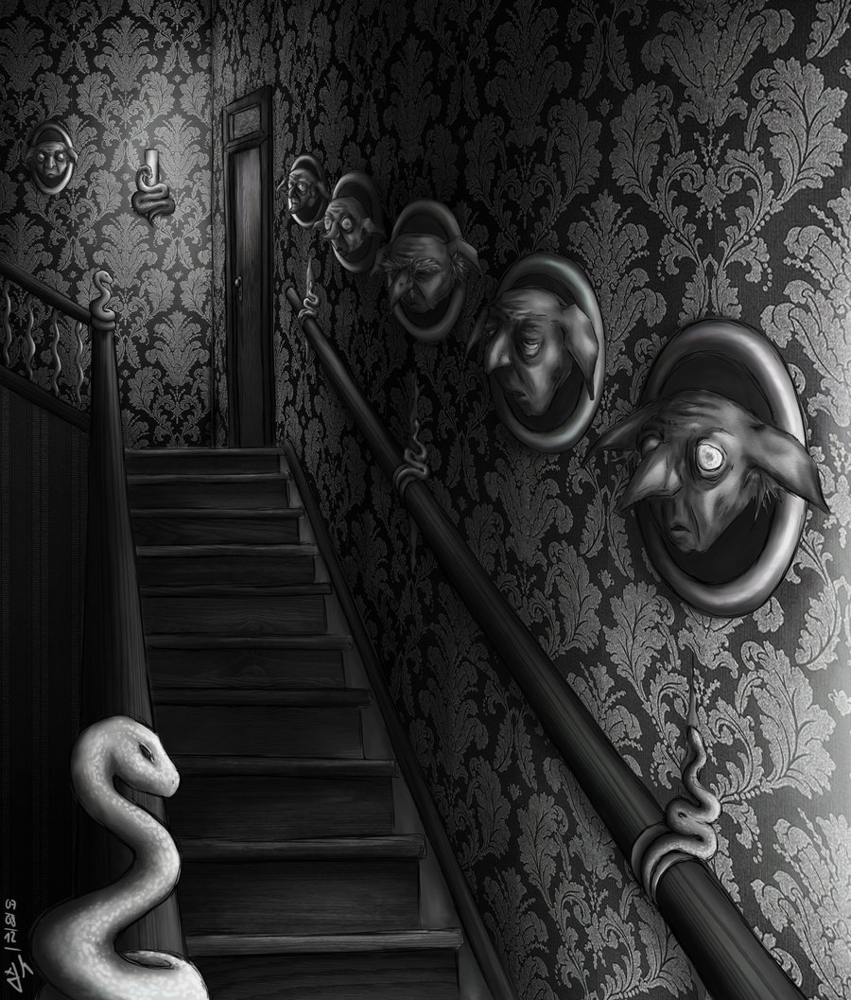
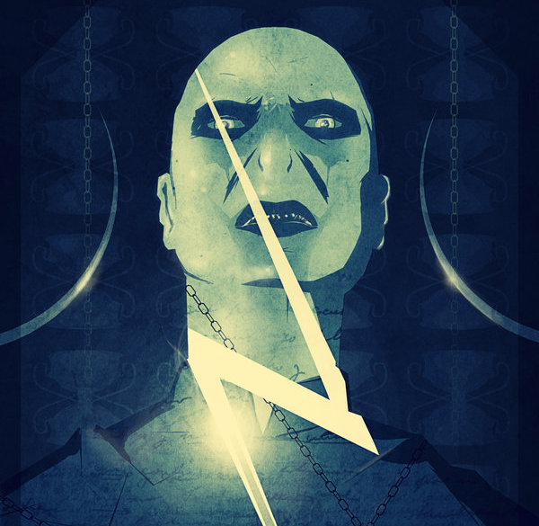
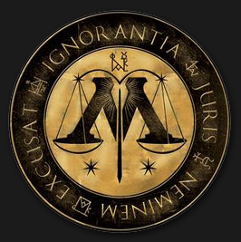
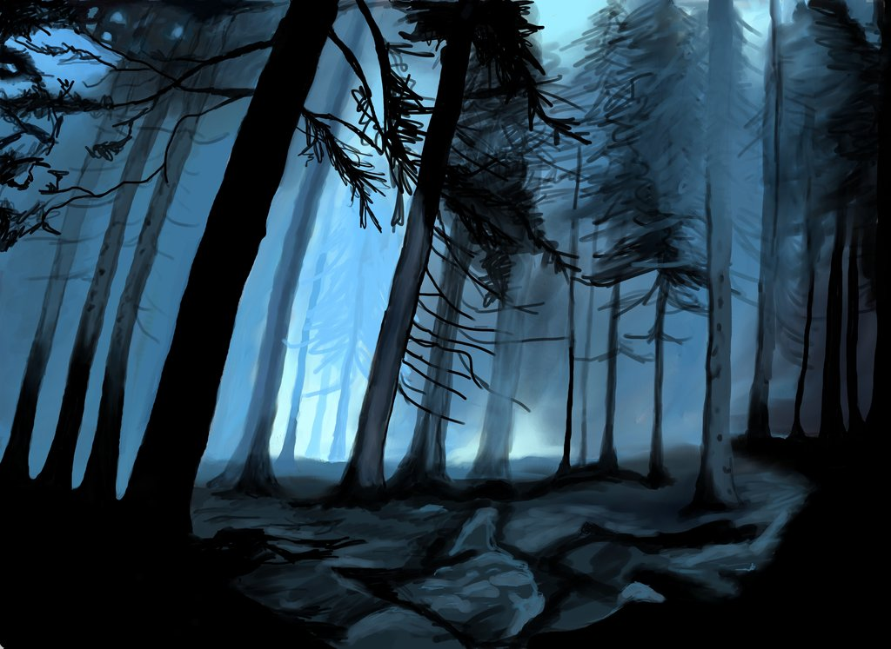
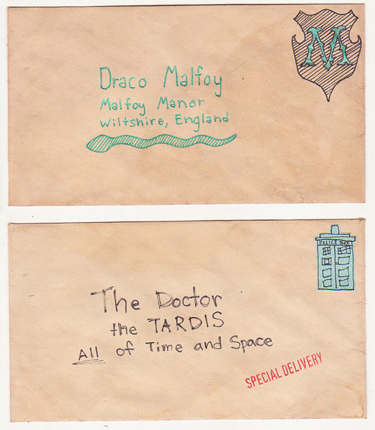

Harry Potter
Top Pick

Oh God Not Again! by Sarah 1281
So maybe everything didn't work out perfectly for Harry. Still, most of his friends survived, he'd gotten married, and was about to become a father. If only he'd have stayed away from the Veil, he wouldn't have had to go back and do everything again. A humorous, intelligent parody in which Harry time-travels to his first year and wrecks so much havoc that Neville's boggart is Harry becoming Minister of Magic. Highlights include Harry spreading a rumor that Draco is Snape and Narcissa's lovechild, collaborating with Snape to lose the House Cup, and using the words "psychic scar," "tax deductible," and "drapery accident" to explain all of his zany actions. It's no wonder this fic is one of the most reviewed stories ever!
Drama

Magical Relations by evansentranced
Harry's relatives were shocked when the Hogwarts letters came. Not because Harry got into Hogwarts. They had expected that. But Dudley, on the other hand... That had been a surprise. Although still being written, this drama of epic proportions belongs on any "best of" list. Dudley's presence at Hogwarts is not treated as a gimmick but is an exemplary execution of the Butterfly Effect. The best part, however, is the gradual character-building that fleshes out minor characters like Anthony Goldstein and allows major characters like Draco Malfoy to diverge sharply from canon in realistic ways. This coming of age drama is sure to bring you laughter and tears.
The Definition of Normal by Brilliant Lady
Harry doesn't want to learn magic or go to Hogwarts. He just wants to be normal, like the Dursleys. But a meddling, crazy old wizard won't take "no" for an answer. Harry might have to learn how to be a normal wizard instead. This series, which currently goes through Harry's third year, shows the long-term effects of child abuse. While Rowling's Harry shapes up to be a hero, this Harry is a survivor in a world where the heroes are less perfect and the villains are less flawed.

The Door of Number 12 by Brigade
It had been eight years since Head Auror Harry Potter had last seen Voldemort and it had been a decade since he last saw his godfather Sirius Black. One of those things is about to change. Although the writing isn't quite at the level of the other fics, this drama deserves a mention because of the unique twist it puts on the "time-traveling Marauders meet Harry" cliche. There are no time travel paradoxes or inevitable futures. Instead, there's an older, burned out Harry who can be a father figure to Sirius and try to craft a better future for the Marauders. It's a thoughtful drama that will hopefully be completed one day.
Humor
Seventh Horcrux by Emerald Ashes
When Voldemort's Horcrux results in Harry retaining the memories and personality of Voldemort, the former Dark Lord gets a second chance to return to his first dream: teaching. In which Harry is insane, Hermione is a Dark Lady-in-training, Ginny is a minion, and Ron is confused. A witty parody that is also a fascinating character study where Harry's inability to understand empathy leads to amusing results.
All Kidding Aside by ms. commas and ampersands
When Lily jumps to conclusions about Remus and Sirius, the duo decide to get revenge on her, James, and Peter with a wonderful joke. However, they wind up getting more than just a good laugh. A Maurauder Era romp with lots of banter and a side of romance.
Romance
A Young Radical's Guide to Love by Blame Brampton
Memories of the war are still fresh, which is all the excuse Decent People need to do appalling things. In this quietly waged conflict, Draco Malfoy is happy to be on the right side of things for once, and even happier to find he's not alone. The political intrigue sets this romance apart from the rest. Blame Brampton's other Draco-centric fics also come highly recommended, especially "Marginal Notes."
Draco Malfoy, It's Your Lucky Day by by faithwood
Even though he's unarmed, injured, lost in the Forbidden Forest, and facing a possible murder charge, Draco Malfoy gets lucky. An Eighth Year survival story and romance filled with twists and red herrings. Faithwood, a prolific slash writer, excels at dealing with the postwar emotional fallout while adding touches of humor and mystery. Her longer fic, "At Your Service," is likewise recommended.

Invisible Bravery by RussianWolf7
Harry goes for nightly walks, and someone starts following him. Harry tries to smoke them out, and they end up stuck in the Forbidden Forest together. A charming romance in which Harry has a one-sided conversation with an invisible person.
Crossover
Doctors and Dragons and Witches (Oh My) by HiBob
Draco Malfoy meets John Smith in a world where aliens and magic mix. This Harry Potter/Doctor Who crossover, like Doctor Who itself, isn't always the easiest to follow, but when the clever banter and heartbreaking twists come together, this science fiction/coming of age fusion soars. An especially remarkable plotline involves the irredeemable Lucius Malfoy becoming the somewhat heroic director of Torchwood. HiBob has also written a darker, equally thought-provoking series in which Draco Malfoy is the Boy-Who-Lived.
Song of the Dark Between by Tessa Crowley
Draco Malfoy jumps off a bridge, hoping for death but getting something very different. Harry Potter languishes in a loveless marriage and colorless world, until quite abruptly he does not. From the dark places of the universe, there is a song that echoes everywhere and nowhere. It sings of power and it sings of hunger. It will devour all things before the end. Draco and Harry become the Eleventh Doctor's companions in this multi-fandom crossover that includes everything from Game of Thrones to Sherlock Holmes to Star Trek. It's the perfect blend of humor, angst, adventure, and romance. Tessa Crowley also wrote an addictive, albeit deeply disturbing, fic called "Chaos Theory," in which Draco is a genius.